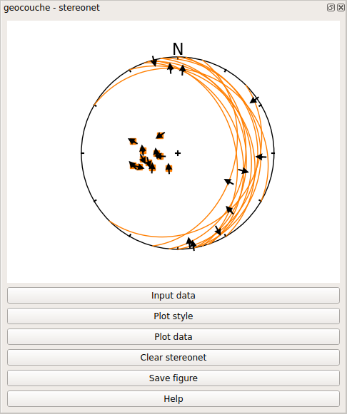
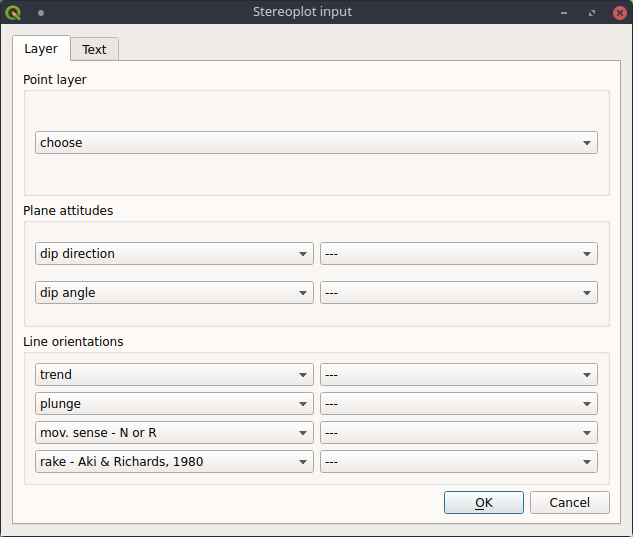
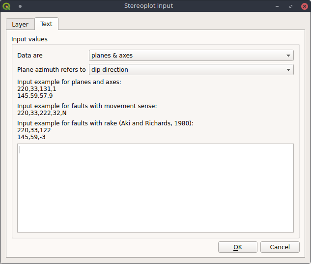
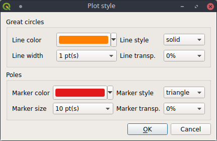

This tool allows to create stereonets representing geological plane and axis/slickenline attitudes
as great circles, poles, faults with slickenlines and T-L diagrams.
Its interface is represented in Fig. 1.

Fig. 1. Stereonet interface.
To plot data in a stereoplot, there are three main steps to follow:
Choice of input data
Definition of plot style
Data plotting
Choice of input data
It is possible to use input data from data stored in a point layer (Layer tab, Fig. 2)
or to use text input (Text tab, Fig. 3).
Input from point layer
When using a point layer already loaded in the TOC, plane and/or axis attitudes
are defined via the fields storing their values (Fig. 2). If there is a selection, only selected features will be used.
Depending if you want to plot planes, lines/axis of faults with slickenlines, you have to define accordingly the source
fields for the various data type: for instance, for faults and slickenlines, you have to define plane dip direction and
dip angle, and rake or (line trend, dip and movement sense).
Remember that rake information takes precedence over (shadows) line trend/dip and optional movement sense, even if you want just to plot
data as planes and lines, not just as faults with slickenlines.

Fig. 2. Interface for input from point layer interface.
To plot faults, the movement sense or the fault rake must be also defined.
Since the current (incorporated) version of apsg do not explicitly support pure transcurrent faults,
pure left- or right-lateral movements are not treated, in the present plugin version.
The movement sense may assume two values: "N" for normal faults, and "R" for reverse faults.
The other option to define faults is by defining a field storing the rake values.
The rake should follow the Aki and Richards (1980) convention:
0° < rakes < 180° -> reverse movements
0° > rakes > -180° -> normal movements
When using rakes, slickenline trend and plunge does not need to be explicited.
Moreover, when defined, rake values take priority above any defined trend-plunge and movement sense values (if present).
Input from text
The input can be inserted into a text window (Fig. 3), defining if data consist of:
planes
axes
planes and axes
fault planes with slickenline trend, plunge and movement sense
fault planes with rake
Another option to take care of for plane data, is whether orientations are expressed
using dip direction or RHR strike.

Fig. 3. Input from text interface.
Plot style
Styles can be defined for both great circles and poles: color, width/size, line/marker style, and transparency (Fig. 4).
Settings are stored in memory and resused in subsequent sessions.

Fig. 4. Plot style interface.
Stereonet plotting
Plots can use a new or a pre-existing stereonet plot. Previous plots can be erased by using the button Clear stereonet (see Fig. 1).
Plane can be plotted as great circles or as plane normals, axes as poles or as normal great circles, faults with slickenlines
as great circles with arrows or alternatvely as T-L diagrams (Fig. 5).